가스기사 (2009-03-01 기출문제)
1과목: 가스유체역학
1. 유효낙차 H[m], 유량 Q[m3/min]인 수차의 이론출력(kW)을 구하는 식은?
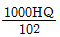
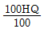
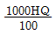
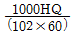
(정답률: 60%)

2. 직경 1㎜, 비중 9.5인 추가 동점성계수(kinematic viscosity) 0.0025m2/s, 비중 1.25인 액체 속으로 자유 낙하하고 있을 때 낙하 종속도(terminal velocity)는 몇 m/s인가?
- 1.44×10-3
- 2.88×10-3
- 3.52×10-3
- 5.76×10-3
(정답률: 47%)
3. 일반적인 원관 내 유동에서 하임계 레이놀즈수에 가장 가까운 값은?
- 2100
- 4000
- 21000
- 40000
(정답률: 64%)
4. 배관에 압축성 기체가 흐를 때 일어날 수 있는 과정이 아닌 것은?
- 등엔트로피 팽창
- 단열마찰 흐름
- 등압마찰 흐름
- 등온마찰 흐름
(정답률: 57%)
5. 이상유체의 성질에 대한 설명으로 옳은 것은?
- 비압축성, 비점성인 유체이다.
- 압축성, 비점성인 유체이다.
- 비압축성, 점성인 유체이다.
- 압축성, 점성인 유체이다.
(정답률: 58%)
6. 관에서의 마찰계수 f에 대한 일반적인 설명으로 옳은 것은?
- 레이놀즈수와 상대조도의 함수이다.
- 마하수와의 함수이다.
- 점성력과는 관계가 없다.
- 관성력만의 함수이다.
(정답률: 69%)
7. 유체를 공동에 가두었다가 고압으로 밀어냄으로써 일을 하는 장치로 일반적으로 압력상승이 크고 유량이 작은 장치는 무엇인가?
- 왕복펌프
- 사류펌프
- 축류펌프
- 터빈
(정답률: 63%)
8. 물이 원관 내를 일정유속으로 흐른다. 출구는 입구보다 4m 높은 곳에 있고 관입구에서의 압력 P1와, 관출구에서의 압력 P2는 각각 2㎏f/cm2abs, 2.83㎏f/cm2abs이다. 펌프를 통해 14㎏f·m/㎏의 에너지가 투입되고 있다면 관로에서 마찰손실은 몇 kgf·m/㎏인가?
- 6.85
- 4.83
- 2.30
- 1.70
(정답률: 29%)
9. 마하각 α를 옳게 표현한 것은? (단, V는 속도, C는 음속, M은 마하수이다.)
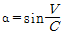
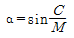
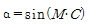
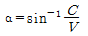
(정답률: 56%)
10. 이상기체의 압축률 β와 체적 탄성계수 K에 대한 표현으로 옳지 않은 것은? (단, P는 압력, V는 부피, k는 비열비이다.)
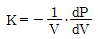
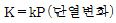
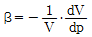
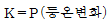
(정답률: 49%)
11. 내경이 53㎜인 강관에 공기가 정상상태로 흐르고 있고 한쪽 단면의 압력은 3atm, 온도는 20℃, 평균유속은 75m/s이다. 이 관의 하류에는 내경 68㎜의 강관이 접속되어 있고 그 곳의 압력은 2atm, 온도 30℃일 때 공기를 이상기체라 가정하면 하류에서의 평균유속은 몇 m/s인가?
- 45.7
- 58.7
- 70.7
- 90.7
(정답률: 30%)
12. 다음 중 노즐이나 관에서 초음속을 얻는 방법으로 가장 적합한 것은?
- 유체가 축소 노즐을 따라 흐르다가 단면적의 변화가 없는 목(throat)을 거쳐 확대노즐을 통해 팽창될 때
- 유체가 확대 노즐을 따라 흐르다가 단면적의 변화가 없는 목(throat)을 거쳐 확대노즐을 통해 압축될 때
- 유체가 확대 노즐을 따라 흐르다가 단면적의 변화가 큰 목(throat)을 거쳐 축소노즐을 통해 압축될 때
- 유체가 축소 노즐을 따라 흐르다가 단면적의 변화가 큰 목(throat)을 거쳐 확대노즐을 통해 팽창될 때
(정답률: 56%)
13. 5L 탱크에는 9기압의 기체가 들어 있고 10L 탱크에는 12기압의 같은 기체가 들어 있다. 이 두 탱크를 연결하여 양쪽 기체가 서로 섞여 평형에 도달했을 때의 압력은? (단, 온도는 동일하다고 가정한다.)
- 9기압
- 10기압
- 11기압
- 12기압
(정답률: 63%)
14. 증기의 분류로 액체를 수송하는 장치는 다음 중 어느 펌프에 해당하는가?
- 피스톤펌프
- 제트펌프
- 기어펌프
- 수격펌프
(정답률: 69%)
15. 점도 6cP를 ㎏/m·h로 환산하면 얼마인가?
- 2.16
- 21.6
- 216
- 2160
(정답률: 54%)
16. 수압기에서 피스톤의 지름이 각각 25㎝와 5㎝이다. 작은 피스톤에 1㎏f의 하중을 가하면 큰 피스톤에는 몇 ㎏f의 하중이 가해지는가?
- 1
- 5
- 25
- 125
(정답률: 55%)
17. 다음과 같은 일반적인 베르누이의 정리에 적용되는 조건이 아닌 것은?
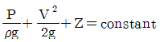
- 정상 상태의 흐름이다.
- 마찰이 없는 흐름이다.
- 직선관에서만의 흐름이다.
- 같은 유선상에 있는 흐름이다.
(정답률: 69%)
18. 지름 1㎝의 원통관에 0℃의 물이 흐르고 있다. 평균속도가 1.2m/s일 때 이 흐름에 해당하는 것은? (단, 0℃ 물의 동점성계수 v는 1.788×10-6m2이다.)
- 천이구간
- 층류
- 3차원 정상류
- 난류
(정답률: 47%)
19. 양정 25m, 송출량 0.15m3/min로 물을 송출하는 펌프가 있다. 효율 65%일 때 펌프의 축 동력은 몇 kW인가?
- 0.94
- 0.83
- 0.74
- 0.68
(정답률: 52%)
20. 온도 25℃인 공기의 점성계수는 1.8×10-4poise이고비중량은 1.2㎏f/m3이다. 이때 공기의 동점성계수는 몇 m2/s인가?
- 1.8×10-6
- 1.5×10-5
- 1.8×10-4
- 1.5×10-4
(정답률: 50%)
2과목: 연소공학
21. 총발열량과 진발열량에 대한 설명으로 옳은 것은?
- 총발열량이란 수증기의 잠열을 포함한 발열량을 말한다.
- 총발열량이란 연료가 연소할 때 생성하는 생성물 중 물의 상태가 기체일 때 내는 열량을 말한다.
- 진발열량이란 액체상태의 연료가 연소할 때 내는 열량을 말한다.
- 총발열량과 진발열량이란 용어는 고체와 액체 연료에서만 사용되는 것이다.
(정답률: 62%)
22. 체적이 일정한 상태에서 산소 1㎏을 20℃에서 220℃까지 높이는데 필요한 열량은 약 몇 kJ인가? (단, 산소의 정적비열 Cv는 0.879J/g·℃이다.)
- 21
- 42
- 84
- 176
(정답률: 44%)
23. 이상기체에 대한 상호 관계식을 나타낸 것 중 옳지 않은 것은? (단, U는 내부에너지, Q는 열, W는 일, T는 온도, P는 압력, V는 부피, k는 비열비, Cv는 정적비열, Cp는 정압비열, R은 기체상수이다.)
- 등적과정 : dU＝dQ＝Cv·dT
- 등온과정 : Q＝W＝RT ln(P1/P2)
- 단열과정 : T2/T1＝(V2/V1)K
- 등압과정 : Cp·dT＝Cv·dT＋R·dT
(정답률: 53%)
24. 오토(otto)사이클에서 압축비가 8일 때의 열효율은 약 몇 %인가? (단, 비열비 k는 1.4이다.)
- 29.7
- 44.0
- 56.5
- 71.5
(정답률: 56%)
25. 다음 [보기]에서 설명하는 가스폭발 위험성 평가 기법은?
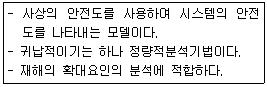
- FHA(Fault Hazard Analysis)
- JSA(Job Safety Analysis)
- EVP(Extreme Value Projection)
- ETA(Event Tree Analysis)
(정답률: 66%)
26. 다음 그림은 어떤 냉매의 P-h 선도이다. 냉매의 증발 과정을 표시한 것은?
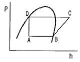
- A → B
- B → C
- C → D
- D → A
(정답률: 52%)
27. 증기운폭발의 특징에 대한 설명으로 틀린 것은?
- 증기운의 크기가 클수록 점화될 가능성이 커진다.
- 폭발보다 화재가 많다.
- 연소에너지의 약 20% 만 폭풍파로 변한다.
- 점화위치가 방출점에서 가까울수록 폭발위력이 크다.
(정답률: 64%)
28. [그림]은 층류예혼합화염의 구조도이다. 온도곡선의 변곡점인 Ti를 무엇이라 하는가?
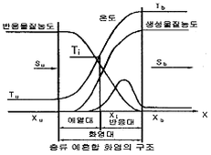
- 착화온도
- 반전온도
- 화염평균온도
- 예혼합화염온도
(정답률: 70%)
29. 가연성 물질의 폭굉유도거리(DID)가 짧아지는 요인에 해당되지 않는 경우는?
- 주위의 압력이 낮을수록
- 점화원의 에너지가 클수록
- 정상연소속도가 큰 혼합가스일수록
- 관속에 방해물이 있거나 관경이 가늘수록
(정답률: 62%)
30. 안쪽반지름 55㎝, 바깥반지름 90㎝인 구형 고압 반응용기(λ＝41.87W/m·℃) 내외의 표면온도가 각각 551K, 543K일 때 열손실은 약 몇 kW인가?
- 6
- 11
- 18
- 29
(정답률: 31%)
31. 압력 0.2MPa, 온도 333K의 공기 2㎏이 이상적인 폴리트로픽 과정으로 압축되어 압력 2MPa, 온도 523K로 변화하였을 때 이 과정 동안의 일량은 약 몇 kJ인가?
- -447
- -547
- -647
- -667
(정답률: 25%)
32. 수증기와 CO의 몰 혼합물을 반응시켰을 때 1000℃, 1기압에서의 평형조성이 CO, H2O가 각각 28mol%, H2CO2가 각각 22mol% 라 하면, 정압 평형정수(Kp)는 약 얼마인가?
- 0.2
- 0.6
- 0.9
- 1.3
(정답률: 43%)
33. 가스압이 이상 저하한다든지 노즐과 콕크 등이 막혀 가스량이 극히 적게 될 경우 발생하는 현상은?
- 불완전연소
- 리프팅
- 역화
- 황염
(정답률: 66%)
34. 어느 과열 증기의 온도가 450℃일 때 과열온도는? (단, 이 증기의 포화온도는 573K이다.)
- 50
- 123
- 150
- 273
(정답률: 53%)
35. 메탄 2㎏을 완전연소하는데 필요한 이론 공기량은 약 몇 Nm3인가? (단, 공기 중 산소는 21v%이다.)
- 8.89
- 11.59
- 13.33
- 26.67
(정답률: 55%)
36. 이상기체에 대한 설명 중 틀린 것은?
- 분자간의 힘은 없으나, 분자의 크기는 있다.
- 저온·고온으로 하여도 액화나 응고하지 않는다.
- 절대온도 0도에서 기체로서의 부피는 0으로 된다.
- 보일-샤를의 법칙이나 이상기체상태방정식을 만족한다.
(정답률: 58%)
37. 제1종 영구기관을 바르게 표현한 것은?
- 외부에서 에너지를 가하지 않고 영구히 에너지를 낼 수 있는 기관
- 공급된 에너지보다 더 많은 에너지를 낼 수 있는 기관
- 지금까지 개발된 기관 중에서 효율이 가장 좋은 기관
- 열역학 제2법칙에 위배되는 기관
(정답률: 68%)
38. 다음 중 분해연소에 대하여 가장 옳게 설명한 것은?
- 연료가 그 표면으로부터 증발되면서 연소하는 것
- 공기가 직접 탄소 표면에 접촉되면서 연소가 계속되는 것
- 연료가 가열로 인하여 분해되면서 가연성 혼합기체가 되어 연소하는 것
- 대기 중의 산소가 화염의 표면으로부터 중심으로 확산하면서 연소하는 것
(정답률: 66%)
39. 가스터빈 장치의 이상사이클을 Brayton 사이클이라고도 한다. 이 사이클의 효율을 증대시킬 수 있는 방법이 아닌 것은?
- 터빈에 다단팽창을 이용한다.
- 기관에 부딪치는 공기가 운동 에너지를 갖게 하므로 압력을 확산기에서 증가시킨다.
- 터빈을 나가는 연소 기체류와 압축기를 나가는 공기류 사이에 열교환기를 설치한다.
- 공기를 압축하는데 필요한 일은 압축과정을 몇 단계로 나누고, 각 단 사이에 중간 냉각기를 설치한다.
(정답률: 61%)
40. 다음은 간단한 수증기사이클을 나타낸 그림이다. 여기서 랭킨(Rankine)사이클의 경로를 옳게 나타낸 것은?
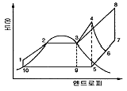
- 1→2→3→4→5→9→10→1
- 1→2→3→9→10→1
- 1→2→3→4→6→5→9→10→1
- 1→2→3→8→7→5→9→10→1
(정답률: 63%)
3과목: 가스설비
41. 냄새가 나는 물질(부취제)의 주입방법이 아닌 것은?
- 적하식
- 증기주입식
- 고압분사식
- 회전식
(정답률: 69%)
42. 조성이 CO 10v%, H2 40v%, CH4 50v%인 가스의 공기 중 폭발하한치는 얼마인가? (단, CO, H2, CH4의 폭발하한치는 각각 12.5v%, 4.15v%, 4.9v%이다.)
- 4.2%
- 4.8%
- 5.3%
- 5.8%
(정답률: 58%)
43. 기어 펌프는 어느 형식의 펌프에 해당하는가?
- 축류펌프
- 원심펌프
- 왕복식펌프
- 회전펌프
(정답률: 57%)
44. 압축에서 다단압축을 하는 주된 목적으로 옳은 것은?
- 압축일과 체적효율의 증가
- 압출일과 체적효율의 감소
- 압축일 증가와 체적효율 감소
- 압축일 감소와 체적효율 증가
(정답률: 58%)
45. 암모니아의 검출확인 방법으로 틀린 것은?
- 자극성 냄새로 알 수 있다.
- 붉은 리트머스시험지를 푸르게 변화시킨다.
- 진한 염산을 접촉시키면 흰 연기가 난다.
- 네슬러시약에 흰색이 검출된다.
(정답률: 57%)
46. 촉매를 사용하여 반응온도 400~800℃로 탄화수소와 수증기를 반응시켜 CH4 , H2, CO, CO2로 변환하는 프로세스는?
- 열분해프로세스
- 접촉분해프로세스
- 수소화분해프로세스
- 대체천연가스프로세스
(정답률: 56%)
47. 고압가스저장설비에서 수소와 산소가 동일한 조건에서 대기 중에 노출되었다면 확산속도는 어떻게 되겠는가?
- 수소가 산소보다 2배 빠르다.
- 수소가 산소보다 4배 빠르다.
- 수소가 산소보다 8배 빠르다.
- 수소가 산소보다 16배 빠르다.
(정답률: 67%)
48. 레페(Reppe) 반응장치 내에서 아세틸렌을 압축할 때 폭발의 위험을 최소화하기 위해 첨가하는 물질로 옳은 것은?
- N2 : 49% 또는 CO2 : 42%
- N2 : 22% 또는 CO2 : 29%
- O2 : 49% 또는 CO2 : 42%
- N2 : 22% 또는 CO2 : 29%
(정답률: 49%)
49. 정압기 특성 중 정상상태에서 유량과 2차 압력과의 관계를 나타내는 특성을 무엇이라 하는가?
- 정특성
- 동특성
- 유량특성
- 작동최소차압
(정답률: 68%)
50. 다음 [그림]에서 보여주는 관이음쇠의 명칭은?
- 소켓
- 니플
- 부싱
- 캡
(정답률: 61%)
51. 외부전원법으로 전기방식 시공 시 직류전원 장치의 ＋극 및 - 극에는 각각 무엇을 연결해야 하는가?
- ＋극 : 불용성 양극, -극 : 가스배관
- ＋극 : 가스배관, - 극 : 불용성 양극
- ＋극 : 전철레일, - 극 : 가스배관
- ＋극 : 가스배관, - 극 : 전철레일
(정답률: 52%)
52. 저비점 액체용 펌프에 대한 설명으로 틀린 것은?
- 저비점 액체는 기화할 경우 흡입 효율이 저하된다.
- 저온 취성이 생기지 않는 스테인리스강, 합금 등이 사용된다.
- 플렌저식 펌프는 대용량에 주로 사용된다.
- 축시일은 거의 메카니컬 시일을 채택하고 있다.
(정답률: 41%)
53. 고압식 액체산소 분리장치에 대한 설명으로 틀린 것은?
- 원료공기를 압축기로 흡입하여 150~200atm으로 압축시킨 후 중간단에 약 15atm의 압력으로 탄산가스를 흡수탑으로 송출한다.
- 탄산가스는 탄산수용액에 흡수시켜 제거한다.
- 공기 압축기의 윤활유는 양질의 광유를 사용한다.
- 건조기 내부에는 고형가성소다, 실리카겔 등의 흡착제를 충전하여 수분을 제거한다.
(정답률: 53%)
54. 아세틸렌 제조설비에서 제조공정 순서로서 옳은 것은?
- 가스청정기 → 수분제거기 → 유분제거기 → 저장탱크 → 충전장치
- 가스발생로 → 쿨러 → 가스청정기 → 압축기 → 충전장치
- 가스발생로 → 압축기 → 쿨러 → 건조기 → 충전장치 → 역화방지기
- 가스반응로 → 압축기 → 가스청정기 → 역화방지기 → 충전장치
(정답률: 55%)
55. 고압가스설비의 배관재료로서 내압부분에 사용해서는 안 되는 재료의 탄소 함량의 기준은?
- 0.35% 이상
- 0.35% 미만
- 0.5% 이상
- 0.5% 미만
(정답률: 44%)
56. LNG 기회장치에 대한 설명으로 옳은 것은?
- Open Rack Vaporizer는 수평형 이중관 구조로서 내부에는 LNG가, 외부에는 해수가 병류로 흐르며 열공급원은 해수이다.
- Submerged Combustion Vaporizer는 기동정지가 복잡한 반면, 천연가스 연소열을 이용하므로 운전비가 저렴하다.
- 중간매체식기화기는 Base Load용으로 개발되었으며 해수와 LNG 사이에 프로판과 같은 중간 열매체가 순환한다.
- 전기가열식기화기는 가스제조공장에서 적용하는 대규모적이면 일반적인 LNG 기화장치이다.
(정답률: 48%)
57. 1000rpm으로 회전하는 펌프를 2000rpm으로 변경하였다. 이 경우 펌프의 양정과 소요동력은 각각 얼마씩 변화하는가?
- 양정 : 2배, 소용동력 : 2배
- 양정 : 4배, 소요동력 : 2배
- 양정 : 8배, 소요동력 : 4배
- 양정 : 4배, 소요동력 : 8배
(정답률: 59%)
58. 부탄가스 30㎏을 충전하기 위해 필요한 용기의 최소부피는 몇 L인가? (단, 충전상수는 2.⑤이고, 액비중은 0.5이다.)
- 30
- 30.78
- 61.5
- 123
(정답률: 49%)
59. 원심펌프를 병렬로 연결시켜 운전하면 어떻게 되는가?
- 양정이 증가한다.
- 양정이 감소한다.
- 유량이 증가한다.
- 유량이 감소한다.
(정답률: 59%)
60. 겨울철 LPG 용기에 서릿발이 생겨 가스가 잘 나오지 않을 때 가스를 사용하기 위한 조치로 옳은 것은?
- 용기를 힘차게 흔든다.
- 연탄불로 쪼인다.
- 40℃ 이하의 열습포로 녹인다.
- 90℃ 정도의 물을 용기에 붓는다.
(정답률: 65%)
4과목: 가스안전관리
61. 흡수식 냉동설비는 발생기를 가열하는 1시간의 입열량이 몇 kcal인 것을 1일의 냉동능력 1ton으로 보는가?
- 3400
- 5540
- 6640
- 7200
(정답률: 60%)
62. 도시가스용 난방기에 설치하여야 할 안전장치 중 법적 의무사항이 아닌 것은?
- 불완전연소방지장치
- 전도안전장치
- 소화안전장치
- 과열방지장치
(정답률: 44%)
63. 가스관련법에 의한 내진설계 대상이 아닌 시설물은?
- 지하에 매설하는 가연성가용 10톤 저장탱크
- 지상에 설치되는 독성가스용 5톤 저장탱크
- 증류탑으로서 동체부의 높이가 5m 이상인 압력용기
- 내용적 5000L 이상인 수액기
(정답률: 36%)
64. 지하 정압기실의 바닥면 둘레가 35m일 때 가스누출 경보기 검지부의 설치개수는?
- 1개
- 2개
- 3개
- 4개
(정답률: 75%)
65. 지중에 설치하는 강재배관의 전위측정용터미널(T/B)의 설치 기준으로 틀린 것은?
- 희생양극법은 300m 이내 간격으로 설치한다.
- 직류전철 횡단부 주위에는 설치할 필요가 없다.
- 지중에 매설되어 있는 배관절연부 양측에 설치한다.
- 타 금속구조물과 근접교차부분에 설치한다.
(정답률: 66%)
66. 고압가스안전관리법에서 정한 가스에 대한 설명으로 옳은 것은?
- 트리메틸아민은 가연성가스이지만 독성가스는 아니다.
- 독성가스 분류기준은 허용농도가 백만분의 2000 이하인 것을 말한다.
- 가압·냉각 등의 방법에 의하여 액체상태로 되어 있는 것으로서 대기압에서의 비점이 섭씨 40도 이하 또는 상용의 온도 이하인 것을 가연성가스라 한다.
- 일정한 압력에 의하여 압축되어 있는 가스를 압축가스라 한다.
(정답률: 59%)
67. 저장탱크는 가스가 누출하지 아니하는 구조로 하고 가스를 저장하는 것에는 가스방출장치를 설치하여야 한다. 이때 가스저장능력 몇 m3 이상인 경우에 가스방출장치를 설치하여야 하는가?
- 5
- 10
- 50
- 100
(정답률: 70%)
68. 액화석유가스의 저장탱크에 설치한 안전밸브는 지면으로부터 몇 m 이상의 높이 또는 그 저장탱크의 정상부로부터 2m 이상의 높이 중 더 높은 위치에 방출구가 있는 가스방출관을 설치하여야 하는가?
- 2
- 3
- 4
- 5
(정답률: 53%)
69. 다음 [보기]에서 가스용 퀵카플러에 대한 설명으로 옳은 것으로만 나열된 것은?
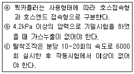
- ⓐ
- ⓐ, ⓑ
- ⓑ, ⓒ
- ⓐ, ⓑ, ⓒ
(정답률: 58%)
70. 저장탱크에서 차량에 고정된 탱크로 가스이송 작업 시의 기준으로 틀린 것은?
- 정전기 제거용 접지코드를 기지의 접지탭에 접속한다.
- 차량에 고정된 탱크 운전자는 이입작업이 종료될 때까지 차량의 긴급차단밸브 부근에서 대기한다.
- 저온 및 초저온가스는 세밀하게 취급해야 하므로 장갑 등은 착용하지 않고 작업한다.
- 부근에 화기가 없는가를 확인한다.
(정답률: 70%)
71. 다음 중 금속플렉시블 호스 제조자가 갖추지 않아도 되는 검사설비는?
- 염수분무시험설비
- 출구압력측정시험설비
- 내압시험설비
- 내구시험설비
(정답률: 53%)
72. 가연성가스 저장탱크를 지하에 설치하는 경우의 기준으로 틀린 것은?
- 저장탱크의 외면에는 부식방지코팅과 전기적 부식방지를 위한 조치를 한다.
- 저장탱크의 주위에 마른 모래를 채운다.
- 지면으로부터 저장탱크의 정상부까지의 깊이는 30㎝ 이상으로 한다.
- 저장탱크를 2개 이상 인접하여 설치하는 경우에는 상호 간에 1m 이상의 거리를 유지한다.
(정답률: 58%)
73. 1일간 저장능력이 35000m3인 일산화탄소 저장설비의 외면과 학교와는 몇 m 이상의 안전거리를 유지하여야 하는가?
- 17
- 18
- 24
- 27
(정답률: 54%)
74. 내부용적이 30000L인 액화산소 저장탱크의 저장능력은 몇 ㎏인가? (단, 비중은 1.14이다.)
- 29430
- 30780
- 31460
- 32250
(정답률: 56%)
75. 도시가스제조시설의 역화 및 공기 등과의 혼합 폭발을 방지하기 위하여 설치하는 플레어스택의 구조로서 틀린 것은?
- Liquid Seal의 설치
- Flame Arrestor의 설치
- Vapor Seal의 설치
- 조연성가스(O2)의 지속적인 주입
(정답률: 70%)
76. 고압가스 충전용기를 운반할 때의 기준으로 옳지 않은 것은?
- 충전용기와 등유는 동일 차량에 적재하여 운반하지 않는다.
- 충전량이 30㎏ 이하이고, 용기 수가 2개를 초과하지 않는 경우에는 오토바이에 적재하여 운반할 수 있다.
- 충전용기 운반차량은 “위험고압가스” 라는 경계표시를 하여야 한다.
- 밸브가 돌출한 충전용기는 밸브의 손상을 방지하는 조치를 하여야 한다.
(정답률: 70%)
77. 염소와 동일차량에 적재하여 운반이 가능한 가스는?
- 산소
- 암모니아
- 수소
- 아세틸렌
(정답률: 64%)
78. 고압가스 충전설비 및 저장설비 중 전기설비를 방폭구조로 하지 않아도 되는 고압가스는?
- 암모니아
- 수소
- 아세틸렌
- 염소
(정답률: 59%)
79. 다음 누출가스와 그 제독제가 잘못 연결된 것은?
- 암모니아 - 물
- 아황산가스 - 물
- 황화수소 - 물
- 포스겐 - 소석회
(정답률: 39%)
80. 액화석유가스 저장탱크를 지상에 설치하는 경우 저장능력이 몇 톤 이상일 때 방류둑을 설치해야 하는가?
- 1000
- 2000
- 3000
- 5000
(정답률: 45%)
5과목: 가스계측기기
81. 막식가스미터의 경우 계량막 밸브의 누설, 밸브와 밸브시트 사이의 누설 등이 원인이 되는 고장은?
- 부동(不動)
- 불통(不通)
- 누설(漏泄)
- 기차(器差)불량
(정답률: 49%)
82. 철-콘스탄탄열전대에서 기준접점이 0℃이고, 측온접점이 20℃ 및 200℃일 때의 열기전력이 각각 1.03mV 및 10.87mV이다. 이 열전대가 기준접점 20℃, 측온접점 200℃에 있을 때의 열기전력은 약 몇 mV인가?
- 3.10
- 9.84
- 10.55
- 11.90
(정답률: 48%)
83. 다음 중 염화파라듐지로 검지가 가능한 가스는?
- C2H2
- CO
- H2O
- NH3
(정답률: 56%)
84. 적외선 흡수스펙트럼의 차이를 이용한 적외선분광분석법에서 검출되지 않는 가스는?
- CO2
- SO2
- Cl2
- NH3
(정답률: 64%)
85. 용량범위가 1.5~200m3/h로 일반 수용가에 널리 사용되는 가스미터는?
- 루트미터
- 습식가스미터
- 델터미터
- 막식가스미터
(정답률: 48%)
86. 감도(sensitivity)에 대한 설명으로 틀린 것은?
- 감도가 좋으면 측정 시간이 길어진다.
- 감도가 좋으면 측정 범위가 좁아진다.
- 정밀한 측정을 위해서는 감도가 좋은 측정기를 사용해야 한다.
- 측정량의 변화를 지시량의 변화로 나누어 준 값이다.
(정답률: 53%)
87. 피토관계수가 0.95인 피토관으로 어떤 기체의 속도를 측정하였더니 그 차압이 25㎏/m2임을 알았다. 이때의 유속은 약 몇 m/s인가? (단, 유체의 비중량은 1.2㎏/m3이다.)
- 19.20
- 25.56
- 27.47
- 30.09
(정답률: 37%)
88. 부르돈(Bourdon)관 압력계에 대한 설명으로 틀린 것은?
- 높은 압력은 측정할 수 있지만 정도는 좋지 않다.
- 고압용 부르돈관의 재질은 니켈강을 사용하는 것이 좋다.
- 탄성을 이용하는 압력계로서 많이 사용되고 있다.
- 부르돈관의 선단은 압력이 상승하면 수축되고, 낮아지면 팽창한다.
(정답률: 50%)
89. 유체의 운동방정식(베르누이의 원리)을 적용하는 유량계는?
- 오벌기어식
- 로터리베인식
- 터빈유량계
- 오리피스식
(정답률: 77%)
90. 액화산소와 같은 극저온 저장조의 상, 하부를 U자 관에 연결하여 차압에 의하여 액면을 측정하는 방식은?
- 크랭크식
- 회전튜브식
- 햄프슨식
- 슬립튜브식
(정답률: 73%)
91. 주로 탄광 내 CH4 가스의 농도를 측정하는데 사용되는 방법은?
- 질량분석법
- 안전등형
- 시험지법
- 검지관법
(정답률: 68%)
92. 차압식 유량계에서 교축상류 및 하류의 압력이 각각 P1, P2일 때 체적유량이 Q1이라 한다. 압력이 2배 만큼 증가하면 유량 Q는 얼마가 되는가?
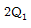
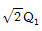
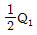
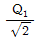
(정답률: 62%)
93. 부르돈관 압력계를 용도로 구분할 때 사용하는 기호로 내진(來震)형에 해당하는 것은?
- M
- H
- V
- C
(정답률: 59%)
94. 절대습도(Absolute humidity)를 바르게 나타낸 것은?
- 습공기 중에 함유되어 있는 건공기 1㎏에 대한 수증기의 중량
- 습공기 중에 함유되어 있는 건공기 1m3에 대한 수증기의 중량
- 습공기 중에 함유되어 있는 건공기 1㎏에 대한 수증기의 체적
- 습공기 중에 함유되어 있는 습공기 1m3에 대한 수증기의 체적
(정답률: 68%)
95. 잔류편차(off-set)가 없고 응답상태가 좋은 조절 동작을 위하여 사용하는 제어방식은?
- 비례(P)동작
- 비례적분(PI)동작
- 비례미분(PD)동작
- 비례적분미분(PID)동작
(정답률: 46%)
96. 할로겐, 과산화물 및 니트로기와 같은 전기음성도가 큰 작용기를 포함하는 분자에 특히 감도가 좋은 가스크로마토그래피 검출기는?
- 불꽃열이온검출기
- 불꽃이온화검출기
- 전자포획검출기
- 열전도도검출기
(정답률: 62%)
97. 다음 [보기]에서 자동제어의 일반적인 동작 순서를 바르게 나열한 것은?
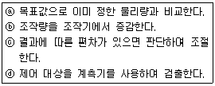
- ⓓ → ⓐ → ⓒ → ⓑ
- ⓓ → ⓑ → ⓐ → ⓒ
- ⓑ → ⓐ → ⓓ → ⓒ
- ⓑ → ⓐ → ⓒ → ⓓ
(정답률: 62%)
98. 피토관(pitot tube)은 어떤 압력차이를 측정하여 유량을 구하는가?
- 정압과 동압
- 전압과 정압
- 대기압과 동압
- 전압과 동압
(정답률: 63%)
99. 연료 가스의 헴펠식(Hempel) 분석 방법에 대한 설명으로 틀린 것은?
- 이산화탄소, 중탄화수소, 산소, 일산화탄소 등의 성분을 분석한다.
- 흡수법과 연소법을 조합한 분석 방법이다.
- 흡수법의 흡수 순서는 이산화탄소, 메탄계탄화수소, 중탄화수소, 산소의 순이다.
- 질소성분은 흡수되지 않은 나머지로 각 성분의 용량 %의 합을 100에서 뺀 값이다.
(정답률: 62%)
100. 분젠시링법에 의한 가스의 비중 측정 시 반드시 필요한 기구는?
- balance
- gage glass
- manometer
- stop watch
(정답률: 56%)
이론출력 = 유효낙차 × 유량 × 중력가속도 × 유효계수
여기서 유효계수는 수력발전기의 효율을 나타내는 값으로, 일반적으로 0.8 ~ 0.9 사이의 값을 가집니다.
따라서 보기 중에서 이론출력을 구하는 식은 "" 입니다.
이유는 해당 보기가 위에서 설명한 이론출력을 구하는 식과 일치하기 때문입니다.